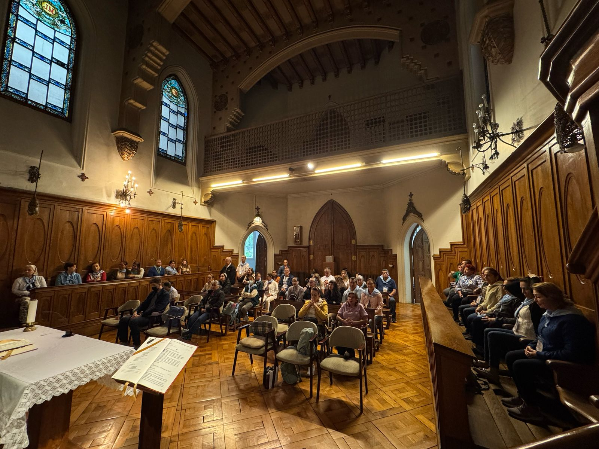
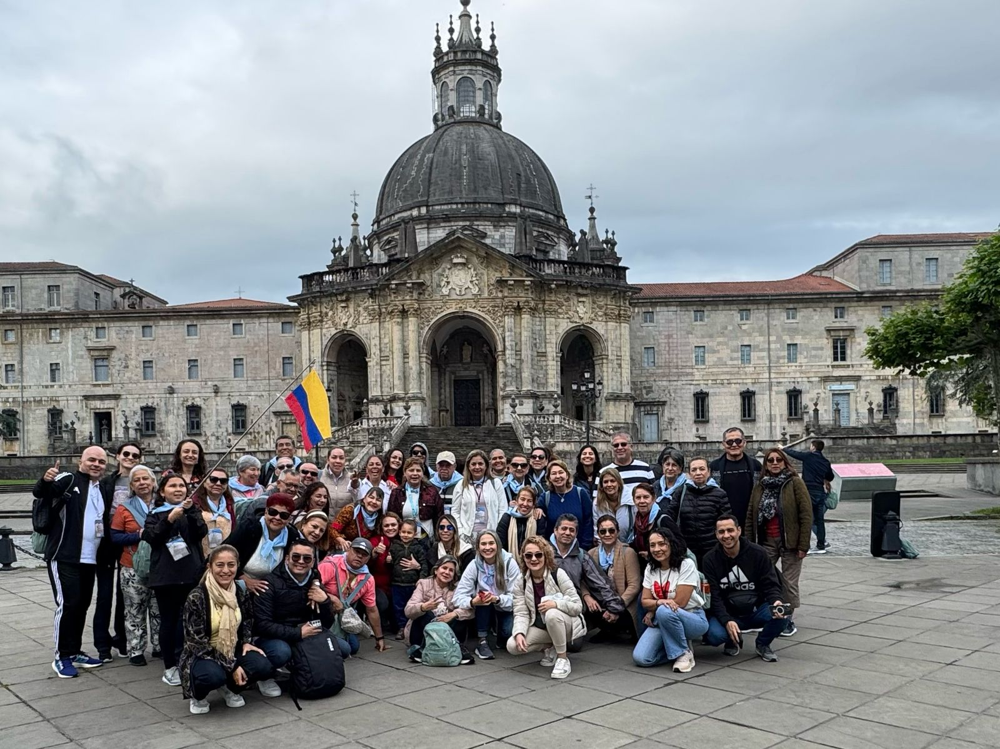
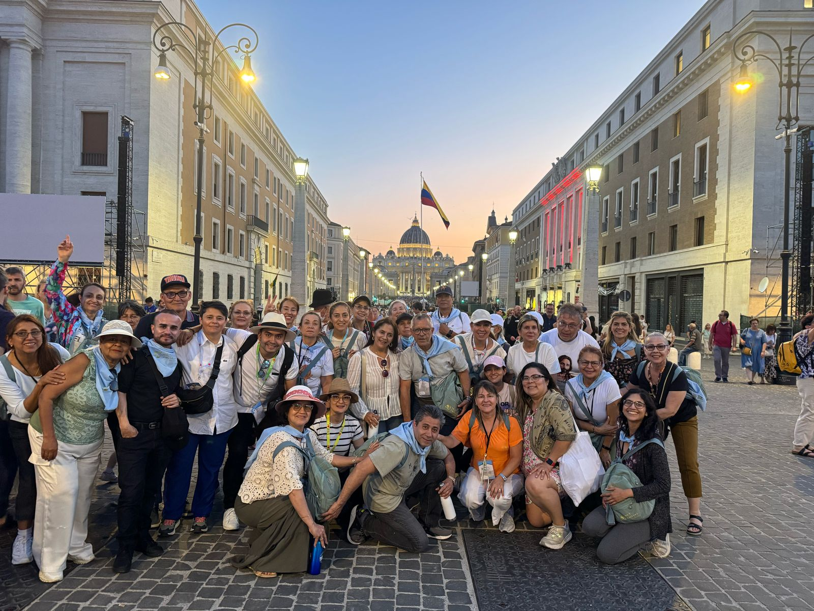
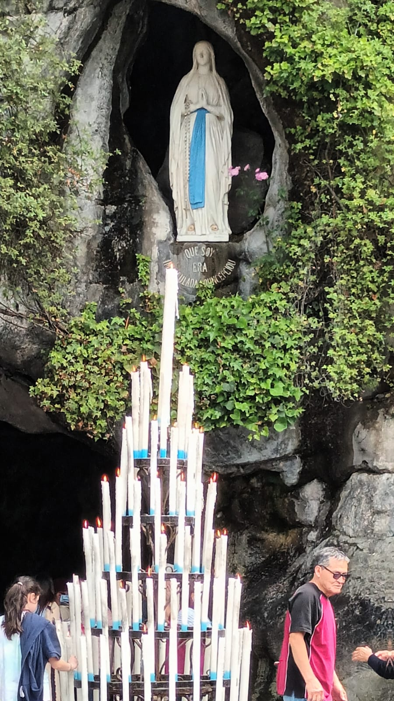

← Back to All Experiences
In 2025, we embarked on an extraordinary pilgrimage to some of the world's most sacred Catholic sanctuaries, experiencing profound spiritual moments in these holy places. Our journey took us through magnificent churches, sacred shrines, and places of divine encounter where countless pilgrims have found peace, healing, and spiritual renewal throughout the centuries.
From the moment we stepped into these sacred spaces, we were enveloped by an atmosphere of divine presence. Each sanctuary told its own story of faith, devotion, and miraculous encounters. We witnessed the power of prayer in action, participated in moving liturgical celebrations, and experienced the profound silence that speaks to the soul.
Our pilgrimage included visits to breathtaking basilicas with spires reaching toward heaven, intimate chapels where saints once prayed, and ancient shrines that have welcomed pilgrims for centuries. Each image in this gallery captures a moment of grace—from candlelit vigils to sunrise meditations, from communal worship to personal prayer.
Ready to experience your own spiritual transformation? Join our next sacred pilgrimage and discover the transformative power of visiting these holy sanctuaries.

Our Pilgrimage Group
Beautiful memory of our Marian Sanctuaries pilgrimage group — 2025

Golden Cross (Coronation Cross)
Pilgrims at the Sanctuary of Our Lady of Lourdes near the Golden Cross — Lourdes, France (2025)

St. Peter's Square
Pilgrims in St. Peter's Square, Vatican City, Rome — 2025 pilgrimage

Apparition Hill (Podbrdo)
Pilgrims at Apparition Hill beside the statue of Our Lady of Peace, Medjugorje — Bosnia & Herzegovina (2025)

Marriage Vow Renewals
Pilgrim couples renewing their marriage vows in Medjugorje, Bosnia & Herzegovina — 2025

Pilgrims at St. Peter's Square
Pilgrims during the Jubilee at St. Peter's Square, Vatican City, Rome — 2025

Moment of Prayer
Pilgrims in a profound moment of prayer — 2025 pilgrimage

Sanctuary of St. Ignatius of Loyola
Pilgrims at the Sanctuary of St. Ignatius of Loyola, northern Spain — 2025

Vatican City
Pilgrims in Vatican City, Rome — 2025 pilgrimage

Jerónimos Monastery of Belém
Pilgrims at the Jerónimos Monastery of Belém, Lisbon, Portugal — 2025

Jubilee of Movements, Associations, and New Communities
Holy Father León XIV in St. Peter's Square, Vatican City, Rome — 2025 pilgrimage

Patrick and Nancy's Castle
Pilgrims at Patrick and Nancy's Castle in Medjugorje, Bosnia & Herzegovina — 2025

Statue of Our Lady of Lourdes
Statue of Our Lady of Lourdes at the Sanctuary of Our Lady of Lourdes, France — 2025

Mount Krizevac
Pilgrims on Mount Krizevac in Bosnia & Herzegovina — 2025 pilgrimage